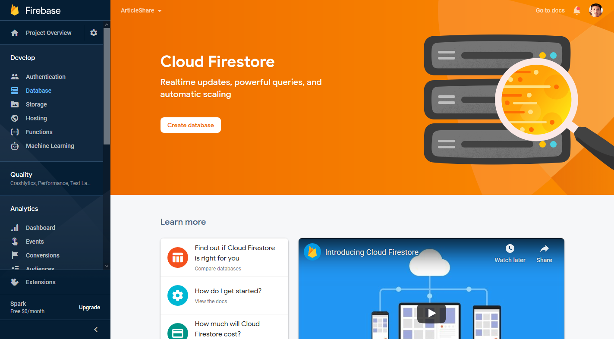
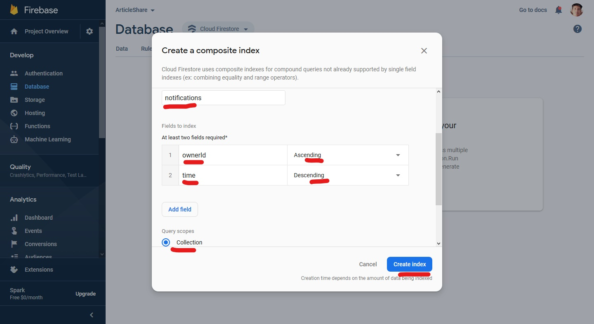
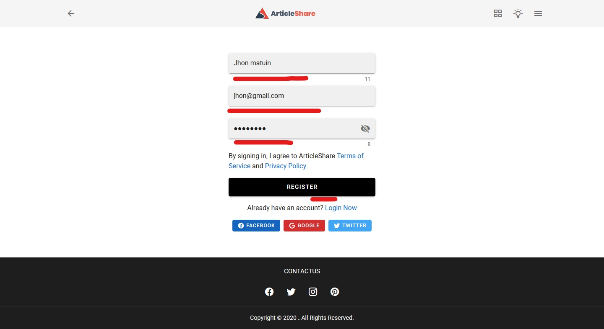
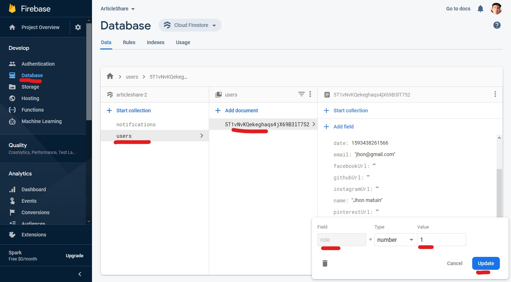
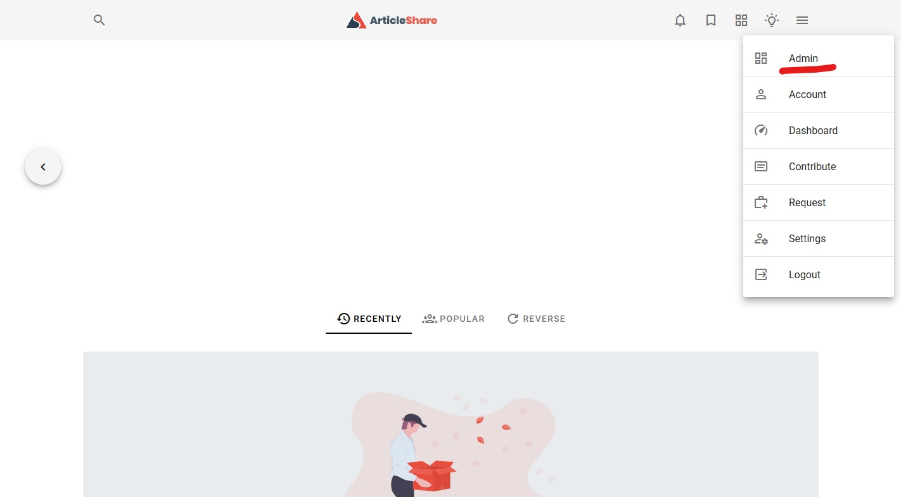

Step five
Setup the application
Enable firebase authentication sign-in providers. First we will enable email/password provider.
You also enable social login like Google, Facebook, Twitter but you have to need create social media app.

Just enable email/password provider then click on Save button

We will use firestore for store your data. Click on Create database button
We will first launch the application in test mode to test it

Then select your cloud firestore location

We have need to change firestore database rules
We have brought a lot of data in our application in ascending and descending order so you need to add index to firestore database.

The following screenshot lists all the indexes. Add all the indexes to your database by looking at the screenshot

For example, I am adding the first index of the screenshot.
The index will take some time to build. You add all the indexes shown in the screenshot one by one

Start the development server and open browser press the localhost running url like http://localhost:8080

Go to register page

Register a account for admin
When registration successful then go to firestore database and go users collection > document > scroll down and find role field then edit the field and set value 1
Now admin account has been activated. Go to base url and look on dropdown navigation added a page for admin panel
Now you can control everything from admin panel